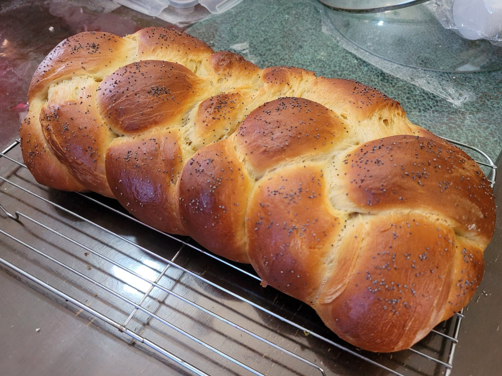

Challah

Ingredients:
- 560 g Flour
- 1 tbsp Instant yeast
- 2 tsp Salt
- 3/4 cup (180 ml) Water, warm
- 6 tbsp (90 ml) Vegetable oil
- 6 tbsp (130 g) Honey
- 2 Eggs + 1 Yolk
- 1 Egg white + 1 tbsp Water
- Optional: Poppy seeds and/or Sesame seeds
Instructions:
- Combine the flour, yeast, and salt into the mixing bowl of a stand mixer and whisk to combine. Then add in the water, oil, honey, eggs, and egg yolk. Knead with the knead hook attachment on medium-low speed for 5-7 minutes. It will be very sticky and still stick to the bottom of the bowl.
- Heavily flour a flat work surface. Dust the dough and the flip it onto the work surface. Dust again and shape into a taut ball. Transfer to an oiled container and then lightly oil the surface of the dough. Cover and let rise for 2-3 hours, or until doubled in volume.
- Once doubled, flip the dough onto a heavily floured work surface. Divide into 4 equal parts and then shape each part into 20" logs. Pinch the logs together at one end and the braid the logs. Pinch the 4 logs together at the other end and then tuck both ends in under the loaf. Cover the loaf and let rise for 1-2 more hours, or until it has risen by about 50%.
- Preheat an oven to 350 degrees Fahrenheit. Whisk together the egg white and water to make an egg wash.
- Once the loaf has risen, gently brush it with the egg wash. Sprinkle with poppy seeds or sesame seeds if desired. Then place in the oven to bake for about 25-35 minutes, or until the internal temperature reads 200 degrees Fahrenheit.
- Remove from the oven and transfer to a cooling rack. Let cool completely before slicing and serving.